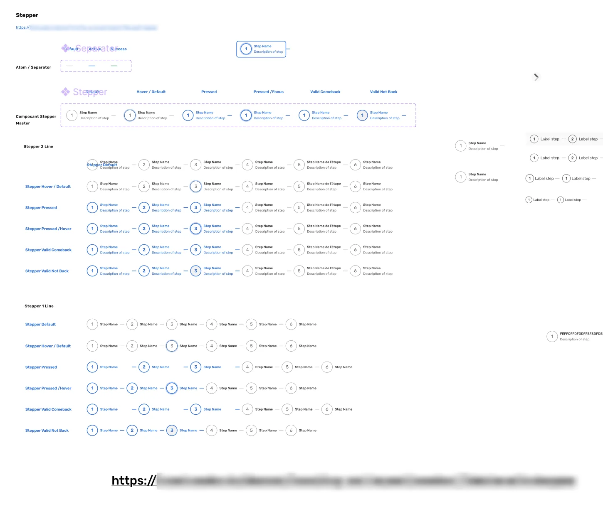
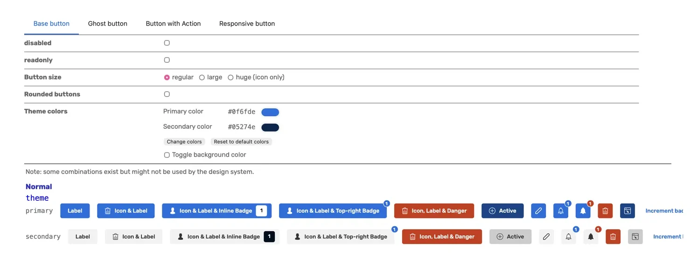
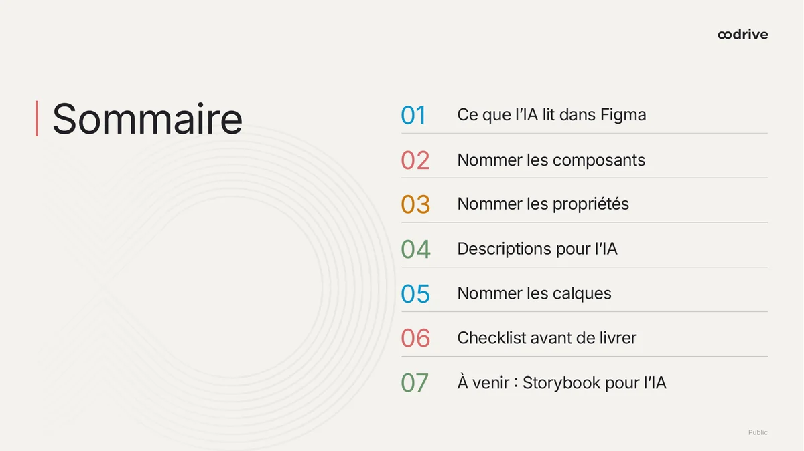
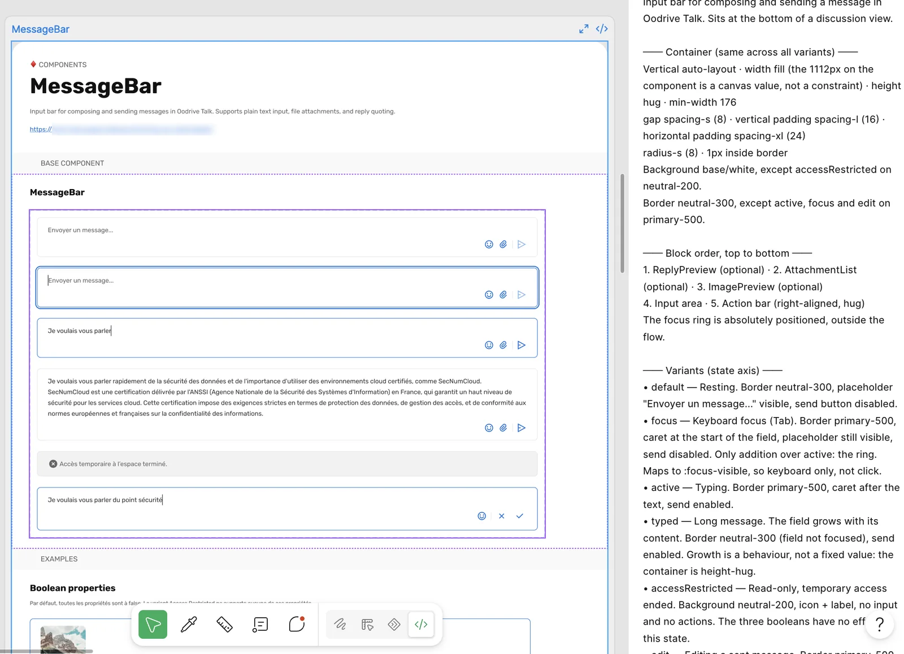
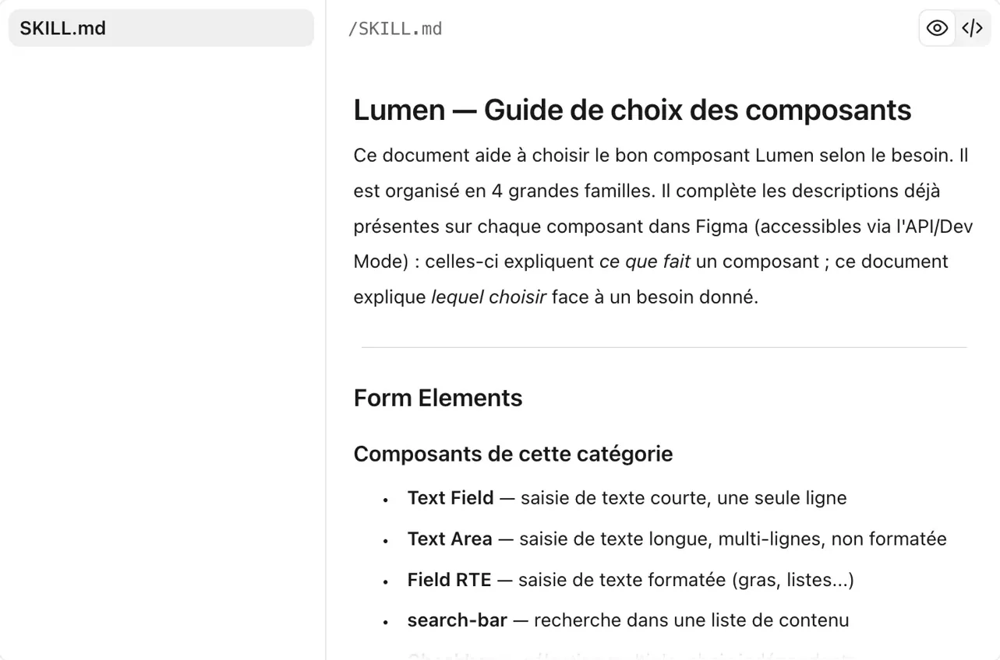
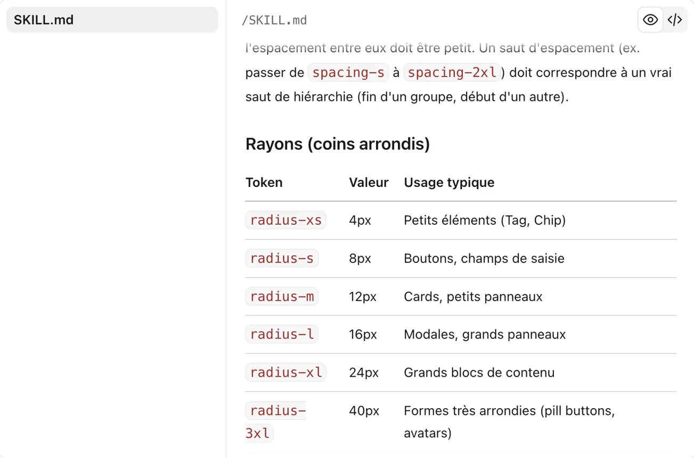
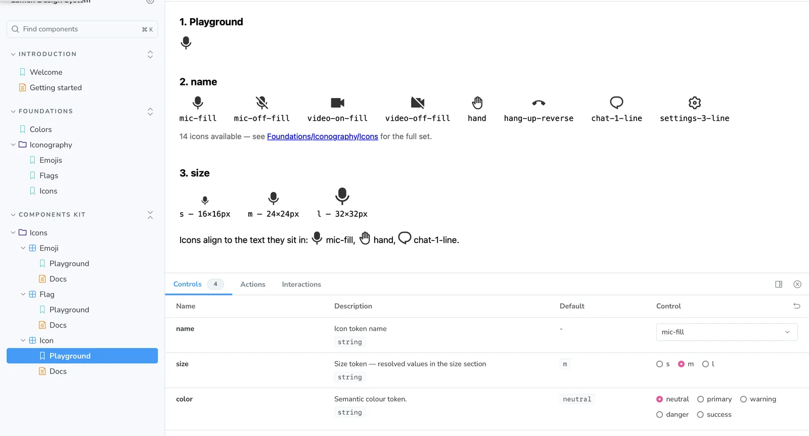

Un design system que l’IA comprend
Rendre Lumen, le design system d’Oodrive, « AI ready » : que l’IA produise des écrans fidèles à nos composants.
- Le problème
- Notre design system (Lumen) n’était une référence fiable ni pour les devs, ni pour l’IA : composants peu documentés, décalés du code, sans tokens fiables. Résultat : des écarts à l’implémentation, et des prototypes IA qui réinventaient nos composants.
- Mon rôle
- J’ai initié le sujet en 2025 et créé le modèle de spec des composants. Une autre designer a mené le chantier ; j’ai contribué à l’atelier palette et aux skills.
- Le résultat
- Des specs précises, enfin lisibles par les devs comme par l’IA : des écarts à l’implémentation devenus rares, des devs plus rapides, et des protos tous réalisés avec l’IA, conformes à notre design system.
L’objectif
Augmenter notre productivité tout en garantissant la qualité des écrans générés et leur conformité à Lumen. À terme, permettre à d’autres équipes de sketcher leurs idées avec les bons composants.
Le point de départ
Côté Figma, un chantier jamais priorisé faute de temps : des composants hérités qui ne correspondent plus au code, des catégories fourre-tout, une documentation lacunaire. Côté code, une librairie vieillissante, documentée par des pages de démo, avec des couleurs en hex et un vocabulaire différent de Figma. Les écarts entre maquette et implémentation étaient un point de friction récurrent entre design et dev.


On prototypait avec l’IA pour tester des idées en recherche, préparer les refinements et les démos des sales. Mais elle ne savait pas où chercher : composants mal utilisés, écrans génériques, tokens et temps perdus en allers-retours. Face aux prospects et aux clients, la démo perdait en crédibilité.
La démarche
- 01Donner un point de départ (2025)MoiL’IA progressait vite et l’équipe voulait s’organiser, sans savoir par où commencer. J’ai fait le point sur ce que l’IA lit dans Figma et ce qui bloquait chez nous, dans une présentation : règles de nommage et de description, et une checklist appliquée à nos composants.
- 02AuditerUne autre designerSur la base de ces conclusions, une autre designer a audité le fichier Figma et structuré le chantier en cinq tiers priorisés : variables, nommage, hygiène, infrastructure, documentation IA.
- 03Trancher et corrigerEnsembleOn a animé ensemble un atelier d’équipe pour trancher les points bloquants de l’audit : doublons, nommage, palette de couleurs. Ma collègue a ensuite appliqué les corrections avec Claude.
- 04Installer un modèle de référenceMoiPour que les règles tiennent dans la durée, chaque composant créé ou repris suit le même modèle. Mon skill fiche de comportement rédige sa spec (usage, cas à éviter, comportements, variables liées) directement dans sa description Figma, là où l’IA et les devs la lisent.
- 05Outiller la générationEnsembleMa collègue a conçu deux skills, lumen-composants et lumen-fondations ; je les ai mis à l’épreuve sur des projets réels pour les ajuster.
Contrainte forte : pas de Code Connect
Oodrive est une suite souveraine : son code est sur GitLab, pas sur GitHub, pour des raisons de sécurité. Code Connect, qui relie les composants Figma au code, est donc écarté. Sans ce lien, l’IA devine quel composant utiliser : le nommage, les descriptions et les variables doivent compenser.
Les principes posés en 2025
J’ai formalisé des principes de nommage et de documentation dans une checklist design, validée avec les devs, à passer avant de publier tout nouveau composant. Elle a aussi servi de référence pour remettre en conformité les composants existants pendant le chantier.

- Sans Code Connect, le nom est le seul pont avec le code. Un composant porte le même nom dans Figma et dans le code, et ce nom décrit son rôle : NavigationBar, jamais BarreBleueHaut. Une couleur, une position ou une version changent, le rôle reste.
- Les propriétés Figma calquent les props du code. Même syntaxe (camelCase, booléens en is / has, valeurs explicites) : l’IA passe d’une variante Figma au code sans rien interpréter.
- Une description qui se lit d’un coup. En anglais : ce qu’est le composant, quand l’utiliser, quand l’éviter, et ses tokens avec leur valeur, par exemple
interactive/primary (#0F6FDE)ouradius-s (8px). L’IA a tout au même endroit, sans aller chercher dans les calques. - Aucune couleur en dur. Chaque couleur est liée à un token, pour que l’IA récupère un rôle et non un code hex.

Sur ces principes, deux skills pour générer
Les descriptions disent ce que fait chaque composant. Mais pour construire un écran, l’IA doit aussi savoir lequel choisir et comment l’assembler. Ma collègue a conçu deux skills pour ça ; je les ai mis à l’épreuve sur des projets réels pour les ajuster.
- lumen-composants · Choisir. Quel composant pour quel besoin, en 4 familles : formulaires, navigation, affichage de données, blocs métier (chat, visio, explorateur de fichiers). Avec les arbitrages qui reviennent souvent : Radio ou Checkbox, Toast ou Modal, Tabs ou Sidebar.
- lumen-fondations · Agencer. Breakpoints, espacements, rayons, hiérarchie typographique et couleurs, avec 14 rôles nommés par usage (texte principal, fond de page, erreur…) plutôt que par teinte. Une règle : ne jamais inventer de valeur hors des tokens.


Les résultats
Côté design et dev. Les devs s’appuient sur les descriptions des composants et sur les fiches générées par mon skill fiche de comportement pour développer plus vite avec l’IA : création et évolution de composants, parcours complets. Côté design, la QA est facilitée : les écarts entre maquette et implémentation, longtemps un point de friction entre nos équipes, sont devenus rares.
- 100 %de nos protos sont désormais réalisés avec l’IA et conformes à Lumen : démos clients, refinements, explorations
- Toute l’équipedesign (4 designers) utilise les deux skills Lumen et mon skill fiche de comportement
- Tout en tokenscouleurs, espacements, rayons et typographie
Les limites
Deux coûts, assumés. Côté design, écrire des specs complètes prend plus de temps, mais les devs confirment que l’investissement est rentable pour eux. Côté IA, appliquer Lumen correctement demande des modèles puissants, gourmands en tokens : on atteint vite les limites d’usage.
La suite
En octobre 2026, on a posé avec les devs les fondations de Lumen dans Storybook, et les noms de composants et de props commencent à s’aligner sur Figma. C’est notre réponse à l’absence de Code Connect : grâce à l’addon MCP, l’agent pourra consulter directement les composants codés, leurs props et leurs stories, et réutiliser l’existant au lieu de deviner. Les principes posés en 2025 en sont le prérequis.

Outils : Figma et FigJam, Figma MCP, Claude, Confluence.